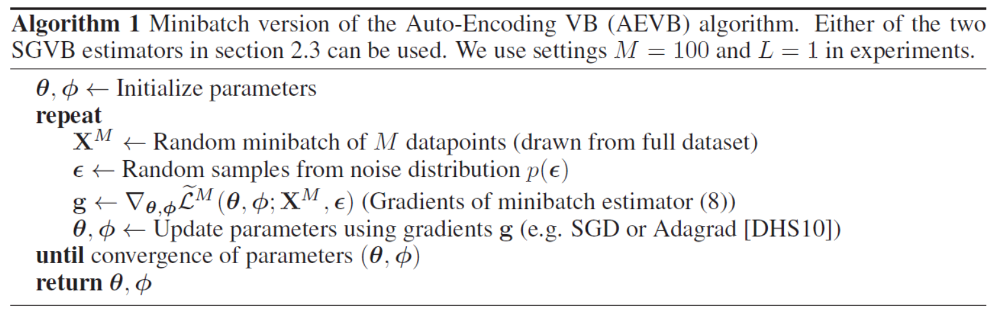

Introduction
We assume the observed variable \(x\) is a random sample from an unknown underlying process, whose true distribution \(p^*(x)\) is unknown. We attempt to approximate this underlying process with a chosen model \(p_{\theta}(x)\), with parameters \(\theta\): \[x\sim p_{\theta}(x)\] We always talk about learning like Deep Learning, and actually the learning is the process of searching for a value of the parameters \(\theta\) in model \(p_{\theta}(x)\), which can approximate the true distribution of the data, denoted by \(p^*(x)\). In other words, \[p_{\theta}(x)\approx p^*(x)\] Latent variables are variables that are part of the model, but which we don’t observe, and are therefore not part of the dataset. We typically use \(z\) to denote such latent variables.
The marginal distribution over the observed variables \(p_{\theta}(x)\), is given by: \[ p_{\theta}(x) = \int p_{\theta}(x,z) dz = \int p_{\theta}(z) p_{\theta}(x|z) dz \] We use the term deep latent variable model (DLVM) to denote a latent variable model \(p_{\theta}(x,z)\) whose distributions are parameterized by neural networks.
Example DLVM for multivariate Bernoulli data
A simple example DLVM for binary data \(x\), with a spherical Gaussian latent space, and a factorized Bernoulli obervation model \[ p(z) = \mathcal{N}(0,\text{I})\\ \text{p} = \text{DecoderNeuralNet}_{\theta}(z)\\ \begin{align} \log p(x|z) =& \sum_{j=1}^J \log p(x_j|z) = \sum_{j=1}^J \text{Bernoulli}(x_j,p_j)\\ =& \sum_{j=1}^Jx_j \log p_j + (1-x_j)\log (1-p_j) \end{align} \] where \(0\leq p_j\leq 1\).
Therefore, we easily get \(p(x,z) = p(x|z)\times p(z)\) by the term we described above.
Some problem
Note that \(p_{\theta}(x,z)\) is efficient to compute. Since the intractability of \(p_{\theta}(x)\) (\(p_{\theta}(x) = \int p_{\theta}(x,z) dz\)), the posterior distribution \(p_{\theta}(z|x)\) is also intractable, because their densities are related through the basic identity: \[p_{\theta}(z|x) = \frac{p_{\theta}(x,z)}{p_{\theta}(x)}\]
How can we perform efficient approximate posterior inference and efficient approximate maximum likelihood estimation in deep latent variable models, in the presence of large datasets?
Similar method like DLVM
We introduce a parametric inference model \(q_{\phi}(z|x)\) (also called as encoder)in this part and we try to optimize the variational parameters \(\phi\) such that: \[q_{\phi}(z|x) \approx p_{\theta}(z|x)\]
Similar to DLVM, the distribution of \(q_{\phi}(z|x)\) also can be parameterized using deep neural networks. In this case, the variational parameters \(\phi\) include the weights and biases of the neural network. For example: \[ (\mu,\sigma) = \text{EncoderNeuralNet}_{\phi}(x)\\ q_{\phi}(z|x) = \mathcal{N}(\mu,\text{diag}(\sigma^2)) \]
Evidence lower bound (ELBO) and KL divergence
The optimization objective of the variational autoencoder is the evidence lower bound, abbreviated as ELBO. An alternative term for this objective is variational lower bound. We can obtain the lower bound by: \[ \begin{align} \log p_{\theta}(x) =&\ \mathbb{E}_{q_{\phi}(z|x)}[\log p_{\theta}(x)] = \mathbb{E}_{q_{\phi}(z|x)} \Big[\log\Big[ \frac{p_{\theta}(x,z)}{p_{\theta}(z|x)}\Big]\Big]\\ =&\ \mathbb{E}_{q_{\phi}(z|x)}\Big[\log\Big[\frac{p_{\theta}(x,z)}{q_{\phi}(z|x)}\frac{q_{\phi}(z|x)}{p_{\theta}(z|x)}\Big]\Big]\\ =&\ \mathbb{E}_{q_{\phi}(z|x)}\Big[\log\Big[\frac{p_{\theta}(x,z)}{q_{\phi}(z|x)}\Big]\Big] + \mathbb{E}_{q_{\phi}(z|x)}\Big[\log\Big[\frac{q_{\phi}(z|x)}{p_{\theta}(z|x)}\Big]\Big]\\ =&\ \mathcal{L}_{\theta,\phi}(x) + KL[q_{\phi}(z|x)||p_{\theta}(z|x)]\\ \geq&\ \mathcal{L}_{\theta,\phi}(x) \end{align} \]
KL divergence
We want to find a good probability distribution \(q_{\phi}(z|x)\) (‘good’ means the efficient computation) to approximate the true posterior probability \(p_{\theta}(z|x)\), where the \(z\) is the latent variable. KL divergence can measure the distance well between these two distribution. For the discrete probability situation, the KL divergence can be written as \[KL(q||p) = \sum q(x)\log \frac{q(x)}{p(x)}\]
Example of 1-dimension Guassian distribution
Supposed that we have two random variables \(x_1, x_2\) w.r.t the guassian distribution \(\mathcal{N}(\mu_1,\sigma_1^2),\mathcal{N}(\mu_2,\sigma_2^2)\) respectively.
Recall that the density function of guassian distribution \[ \mathcal{N}(\mu,\sigma^2) = \frac{1}{\sqrt{2\pi\sigma^2}}e^{-\frac{(x-\mu)^2}{2\sigma^2}} \] Then \[ \begin{align} KL(p_1,p_2) =&\ \int p_1(x)\log \frac{p_1(x)}{p_2(x)}dx\\ =&\ \int p_1(x)(\log p_1(x) - \log p_2(x))dx\\ =&\ \int p_1(x)(\log \frac{1}{\sqrt{2\pi\sigma_1^2}}e^{-\frac{(x-\mu_1)^2}{2\sigma_1^2}} - \log \frac{1}{\sqrt{2\pi\sigma_2^2}}e^{-\frac{(x-\mu_2)^2}{2\sigma_2^2}})dx\\ =&\ \int p_1(x)(-\log \sqrt{2\pi \sigma_1^2} - \frac{(x-\mu_1)^2}{2\sigma_1^2} + \log \sqrt{2\pi \sigma_2^2} + \frac{(x-\mu_2)^2}{2\sigma_2^2})dx\\ =&\ \int p_1(x)(-\frac{1}{2}\log2\pi-\log\sigma_1+\frac{1}{2}\log2\pi+\log\sigma_2 - (\frac{(x-\mu_1)^2}{2\sigma_1^2}-\frac{(x-\mu_2)^2}{2\sigma_2^2}))dx\\ =&\ \int p_1(x)(\log\frac{\sigma_2}{\sigma_1} - (\frac{(x-\mu_1)^2}{2\sigma_1^2}-\frac{(x-\mu_2)^2}{2\sigma_2^2}))dx\\ =&\ \int p_1(x)(\log\frac{\sigma_2}{\sigma_1})dx + \int p_1(x)(\frac{(x-\mu_2)^2}{2\sigma_2^2})dx - \int p_1(x)(\frac{(x-\mu_1)^2}{2\sigma_1^2})dx\\ =&\ \log\frac{\sigma_2}{\sigma_1} + \frac{1}{2\sigma_2^2}\int p_1(x)(x-\mu_2)^2dx - \frac{1}{2\sigma_1^2}\int p_1(x)(x-\mu_1)^2dx \end{align} \] Since \(\sigma^2 = \int p_1(x)(x-\mu_1)^2dx\), then \[ \begin{align} KL(p_1,p_2) =&\ \log\frac{\sigma_2}{\sigma_1} + \frac{1}{2\sigma_2^2}\int p_1(x)(x-\mu_2)^2dx - \frac{1}{2}\\ =&\ \log\frac{\sigma_2}{\sigma_1} + \frac{1}{2\sigma_2^2}\int p_1(x)(x - \mu_1 + \mu_1 - \mu_2)^2dx - \frac{1}{2}\\ =&\ \log\frac{\sigma_2}{\sigma_1} + \frac{1}{2\sigma_2^2}[\int p_1(x)(x-\mu_1)^2dx+\int p_1(x)(\mu_1-\mu_2)^2dx+2\int p_1(x)(x-\mu_1)(\mu_1-\mu_2)dx] - \frac{1}{2}\\ \end{align} \] We know that \(\mu_1 = \int x p_1(x)dx\), so \(2\int p_1(x)(x-\mu_1)(\mu_1-\mu_2)dx = 2(\mu_1-\mu_2)[\int xp_1(x)dx - \mu_1] = 0\), thus \[ \begin{align} KL(p_1,p_2) =&\ \log\frac{\sigma_2}{\sigma_1} + \frac{1}{2\sigma_2^2}[\int p_1(x)(x-\mu_1)^2dx + (\mu_1-\mu_2)^2] - \frac{1}{2}\\ =&\ \log\frac{\sigma_2}{\sigma_1} + \frac{\sigma_1^2+(\mu_1 - \mu_2)^2}{2\sigma_2^2} - \frac{1}{2}\\ \end{align} \] If we suppose that the \(\mathcal{N}(\mu_2,\sigma_2^2)\) is standard guassian distribution, \(\mu_2 = 0, \sigma_2^2 = 1\), so \[ \begin{align} KL =&\ \log\frac{\sigma_2}{\sigma_1} + \frac{\sigma_1^2+(\mu_1 - \mu_2)^2}{2\sigma_2^2} - \frac{1}{2}\\ =&\ \log1 - \log\sigma_1 + \frac{\sigma_1^2+(\mu_1 - 0)^2}{2} - \frac{1}{2}\\ =&\ -\log\sigma_1 + \frac{\sigma_1^2+\mu_1^2}{2} - \frac{1}{2}\\ \end{align} \] We expect that the KL can be as small as possible, we calculate its derivative, then we get \[ \frac{\partial KL}{\partial \sigma_1} = -\frac{1}{\sigma_1} + \sigma_1\\ \frac{\partial KL}{\partial \mu_1} = \mu_1 \] We let them equal to zero, then we get \[ -\frac{1}{\sigma_1} + \sigma_1 = 0 \Rightarrow \sigma_1 = 1\\ \mu_1 = 0 \] which means that the KL becomes the minimum when \(x_2 \sim \mathcal{N}(0,1)\)
Minimization of KL divergence
If we want to use the ELBO to approximate the log-likelihood, then we need to minimize the \(D_{KL}[q_{\phi}(z|x)||p_{\theta}(z|x)]\).
From \[ \begin{align} KL[q_{\phi}(z|x)||p_{\theta}(z|x)] =&\ \int q_{\phi}(z|x) \log \frac{q_{\phi}(z|x)}{p_{\theta}(z|x)} dz\\ =&\ \int q_{\phi}(z|x) [\log q_{\phi}(z|x) - \log p_{\theta}(z|x)]dz \end{align} \] and Bayesian formula \[ p_{\theta}(z|x) = \frac{p_{\theta}(x|z)*p_{\theta}(z)}{p_{\theta}(x)} \] We can get \[ \begin{align} KL[q_{\phi}(z|x)||p_{\theta}(z|x)] =&\ \int q_{\phi}(z|x) [\log q_{\phi}(z|x) - \log \frac{p_{\theta}(x|z)*p_{\theta}(z)}{p_{\theta}(x)}]dz\\ =&\ \int q_{\phi}(z|x) [\log q_{\phi}(z|x) -\log p_{\theta}(x|z) - \log p_{\theta}(z) + \log p_{\theta}(x)]dz\\ =&\ \int q_{\phi}(z|x) [\log q_{\phi}(z|x) -\log p_{\theta}(x|z) - \log p_{\theta}(z)]dz + \log p_{\theta}(x)\\ =&\ KL[q_{\phi}(z|x)||p_{\theta}(z)] - \int q_{\phi}(z|x) \log p_{\theta}(x|z)dz + \log p_{\theta}(x) \end{align} \]
When the data \(x\) are provided, then last term in the right side \(\log p_{\theta}(x)\) becomes constant, and we wish the \(D_{KL}[q_{\phi}(z|x)||p_{\theta}(z|x)]\) can be as small as possible.
Thus, the optimization problem becomes
\(\min\limits_x D_{KL}[q_{\phi}(z|x)||p_{\theta}(z)]\)
\(\max\limits_x \int q_{\phi}(z|x) \log p_{\theta}(x|z)dz\)
It also can be written as \[\min_x KL[q_{\phi}(z|x)||p_{\theta}(z)] - \mathbb{E}_{q_{\phi}(z|x)}[\log p_{\theta}(x|z)]\]
Although we can obtain our new optimization problem, the problem actually is difficult to solve, and thus we would like to straightly optimize the ELBO.
Variational Auto-Encoder
Connection with EM
For standard EM algorithms, the posterior is often known, \(q_{\phi}(z|x) = q(z|x) = p_{\theta}(z|x)\), then the KL term becomes zero, so \[ \begin{align} \log p_{\theta}(x) = \mathcal{L}_{\theta}(x) =&\ \mathbb{E}_{q(z|x)}\Big[\log\Big[\frac{p_{\theta}(x,z)}{q(z|x)}\Big]\Big]\\ =&\ \mathbb{E}_{q(z|x)}[\log p_{\theta}(x,z)] - \mathbb{E}_{q(z|x)}[\log q(z|x)] \end{align} \]
The above step is indeed the E-step in the standard EM algorithm. The M-step would be \[\theta_{\text{new}} = \arg \max_\theta L_{\theta}(x)\]
Stochastic gradient-based optimization of the ELBO
From the Evidence lower bound (ELBO) part, we obtain the inequality fomula as \(\log p_{\theta}(x) \geq \mathcal{L}_{\theta,\phi}(x)\). Recall that EM algorithm is one of the special case of Minorize-Maximization (MM) algorithm, and \(\mathcal{L}_{\theta,\phi}(x)\) can be considered as the surrogate function in MM algorithm, so we would get the maximum of log-likelihood by maximizing the lower bound.
Figure1. The EM algorithm involves alternatel computing a lower bound on the log likelihood for the current parameter values and then maximizing this bound to obtain the new parameter values.
Given a dataset with i.i.d. data, the ELBO objective is the sum (or average) of individual-datapoint ELBO’s: \[ \mathcal{L}_{\theta,\phi}(\mathcal{D})=\sum_{x\in\mathcal{D}}\mathcal{L}_{\theta,\phi}(x) \]
Apparantly, the individual-datapoint ELBO and its gradient \(\nabla_{\theta,\phi}\mathcal{L}_{\theta,\phi}(x)\) is intractable in general.
The SGVB estimator and Auto-Encoding VB (AEVB) algorithm
Reparamterization trick
Let \(z\) be a continuous random variable and \(z\sim q_{\phi}(z|x)\) be some conditional distribution. It is often possible to express the random variable \(z\) as a deterministic variable \(z=g_{\phi}(\epsilon,x)\), where \(\epsilon\) is an auxiliary variable with independent marginal \(p(\epsilon)\).
We suppose that the recognition model \(q_{\phi}(z|x)\) can be written as some differentiable transformation of another randome variable \(\epsilon\), \(g_{\phi}(\epsilon,x)\), and we can form a simple Monte Carlo estimator \(\tilde{\mathcal{L}}_{\theta,\phi}(x)\) of the individual-datapoint ELBO: \[ \epsilon \sim p(\epsilon) \]
so we can get our generic Stochastic Gradient Variational Bayes (SGVB) estimator from the lower bound \[ \tilde{\mathcal{L}}_{\theta,\phi}^{A}(x^{(i)}) = \frac{1}{L}\sum_{l=1}^L[\log p_{\theta}(x^{(i)},z^{(i,l)}) - \log q_{\phi}(z^{(i,l)}|x^{(i)})] \] where \(z^{(i,l)} = g_{\phi}(\epsilon^{(i,l)},x^{(i)}),\quad \epsilon^{(i,l)} \sim p(\epsilon)\).
We try to decompose the \(\mathcal{L}_{\theta,\phi}(x)\), and we get \[ \begin{align} \mathcal{L}_{\theta,\phi}(x^{(i)}) =&\ \mathbb{E}_{q_{\phi}(z|x^{(i)})}\Big[\log\frac{p_{\theta}(x^{(i)},z)}{q_{\phi}(z|x^{(i)})}\Big]\\ =&\ \mathbb{E}_{q_{\phi}(z|x^{(i)})}\Big[\log\frac{p_{\theta}(x^{(i)}|z)p_{\theta}(z)}{q_{\phi}(z|x^{(i)})}\Big]\\ =&\ \mathbb{E}_{q_{\phi}(z|x^{(i)})}\Big[\log p_{\theta}(x^{(i)}|z)-\log\frac{q_{\phi}(z|x^{(i)})}{p_{\theta}(z)}\Big]\\ =&\ \mathbb{E}_{q_{\phi}(z|x^{(i)})}[\log p_{\theta}(x^{(i)}|z)]-KL[q_{\phi}(z|x^{(i)})||p_{\theta}(z)] \end{align} \] The final equality showed the same object result (In Minimization of KL divergence section).
With this equality, we also can obtain another estimator \[ \tilde{\mathcal{L}}_{\theta,\phi}^{B}(x^{(i)}) = \mathbb{E}_{q_{\phi}(z|x^{(i)})}[\log p_{\theta}(x^{(i)}|z)]-KL[q_{\phi}(z|x^{(i)})||p_{\theta}(z)]\\ =\frac{1}{L}\sum_{l=1}^L\log p_{\theta}(x^{(i)}|z^{(i,l)})-KL[q_{\phi}(z|x^{(i)})||p_{\theta}(z)] \] where \(z^{(i,l)} = g_{\phi}(\epsilon^{(i,l)},x^{(i)}),\quad \epsilon^{(i,l)} \sim p(\epsilon)\). Given multiple datapoints from a dataset \(\text{X}\) with \(N\) datapoints, we can construct an estimator of the marginal likelihood lower bound of the full dataset, based on minibatches: \[ \mathcal{L}_{\theta,\phi}(\text{X})\simeq\tilde{\mathcal{L}}_{\theta,\phi}^{M}(\text{X}^M)=\frac{N}{M}\sum_{i=1}^M\tilde{\mathcal{L}}_{\theta,\phi}(x^{(i)}) \] where the minibatch \(\text{X}^M=\{x^{(i)}\}_{i=1}^M\) is randomly drawn sample of \(M\) datapoints from the full dataset \(\text{X}\) with \(N\) datapoints. In the paper Auto-Encoding Variational Bayes, author set \(M = 100, L = 1\) in their experiments.

Variational Auto-Encoder with specific case
We know that we can not perform the algorithm that we describe above, because we don’t know the distributions of \(\epsilon, p_{\theta}(x|z), q_{\phi}(z|x), p_{\theta}(z)\) and \(g_{\phi}(\epsilon,x)\). In reality, like author described in the paper, we firstly let the prior over the latent variables be the centered isotropic multivariate Guassian \(p_{\theta}(z) = \mathcal{N}(0,\text{I})\).
Variational approxiamte posterior \(q_{\phi}(z|x^{(i)})\)
Let the variational approxiamte posterior be a multivariate Guassian with a diagonal covariance structure: \[ q_{\phi}(z|x^{(i)}) = \mathcal{N}(\mu^{(i)},\sigma^{(i)^2}\text{I}) \] where \(\mu^{(i)},\sigma^{(i)}\) denote the variational mean and s.d. evaluated by datapoint \(i\).
Then a valid reparameterization is \(z=\mu+\sigma\epsilon\), where \(\epsilon\) is an auxiliary noise variable \(\epsilon\sim \mathcal{N}(0,\text{I})\).
Let \(J\) be the dimensionality of \(z\) and \(\mu^{(i)}_j, \sigma^{(i)}_j\) denote the \(j\)-th element. Recall that \[ \mathbb{E}[z] = \int z p(z) dz\\ \mathbb{E}[z^2] = \int z^2 p(z) dz\\ \text{Var}[z] = \mathbb{E}[z^2] - \mathbb{E}^2[z] \] Then, \[ \begin{align} \int q_{\phi}(z|x^{(i)})\log p_{\theta}(z)dz =&\ \int \mathcal{N}(\mu^{(i)},\sigma^{(i)^2}\text{I})\log \mathcal{N}(0,\text{I})dz\\ =&\ \int \mathcal{N}(\mu^{(i)},\sigma^{(i)^2}\text{I})(\log \frac{1}{\sqrt{2\pi}})dz - \int \mathcal{N}(\mu^{(i)},\sigma^{(i)^2}\text{I}) \frac{z^2}{2}dz\\ =&\ -\frac{J}{2}\log(2\pi)\int \mathcal{N}(\mu^{(i)},\sigma^{(i)^2}\text{I})dz - \int \mathcal{N}(\mu^{(i)},\sigma^{(i)^2}\text{I}) \frac{z^2}{2}dz\\ =&\ -\frac{J}{2}\log(2\pi) - \frac{1}{2}\int z^2 \mathcal{N}(\mu^{(i)},\sigma^{(i)^2}\text{I})dz\\ =&\ -\frac{J}{2}\log(2\pi) - \frac{1}{2}\sum_{j=1}^J\mathbb{E}_{ q_{\phi}(z_j|x^{(i)})}[z_j^2]\\ =&\ -\frac{J}{2}\log(2\pi) - \frac{1}{2}\sum_{j=1}^J\Big[\mathbb{E}_{ q_{\phi}(z_j|x^{(i)})}^2[z_j]+\text{Var}_{ q_{\phi}(z_j|x^{(i)})}[z_j]\Big]\\ =&\ -\frac{J}{2}\log(2\pi) - \frac{1}{2}\sum_{j=1}^J(\mu_j^2+\sigma_j^2) \end{align} \] and \[ \begin{align} \int q_{\phi}(z|x^{(i)})\log q_{\phi}(z|x^{(i)})dz =&\ \int \mathcal{N}(\mu^{(i)},\sigma^{(i)^2}\text{I})\log \mathcal{N}(\mu^{(i)},\sigma^{(i)^2}\text{I})dz\\ =&\ \int \mathcal{N}(\mu^{(i)},\sigma^{(i)^2}\text{I})\log \Big[\frac{1}{\sqrt{2\pi\sigma^{(i)^2}}}\exp(\frac{-(z-\mu^{(i)})^2}{2\sigma^{(i)^2}})\Big]dz\\ =&\ \int \mathcal{N}(\mu^{(i)},\sigma^{(i)^2}\text{I})\Big[-\frac{1}{2}\log 2\pi - \frac{1}{2}\log \sigma^{(i)^2} - \frac{(z-\mu^{(i)})^2}{2\sigma^{(i)^2}}\Big]dz\\ =&\ -\frac{J}{2}\log(2\pi) - \int \mathcal{N}(\mu^{(i)},\sigma^{(i)^2}\text{I})\Big[\frac{\log \sigma^{(i)^2}}{2} - \frac{(z-\mu^{(i)})^2}{2\sigma^{(i)^2}}\Big]dz\\ =&\ -\frac{J}{2}\log(2\pi) - \int \mathcal{N}(\mu^{(i)},\sigma^{(i)^2}\text{I}) \Big[\frac{1}{2}\log \sigma^{(i)^2} - \frac{z^2-2\mu^{(i)}z+\mu^{(i)^2}}{2\sigma^{(i)^2}}\Big]dz\\ =&\ -\frac{J}{2}\log(2\pi) - \frac{1}{2}\sum_{J=1}^J\log \sigma_j^{(i)^2} + \int \frac{1}{2\sigma^{(i)^2}}\mathcal{N}(\mu^{(i)},\sigma^{(i)^2}\text{I})(z^2-2\mu^{(i)}z+\mu^{(i)^2})dz\\ =&\ -\frac{J}{2}\log(2\pi) - \frac{1}{2}\sum_{j=1}^J\log \sigma_j^{(i)^2} + \frac{1}{2}\sum_{j=1}^J\frac{\mu^{(i)^2}+\sigma^{(i)^2}-2\mu^{(i)^2}+\mu^{(i)^2}}{\sigma^{(i)^2}}\\ =&\ -\frac{J}{2}\log(2\pi) - \frac{1}{2}\sum_{j=1}^J(1+\log \sigma_j^{(i)^2}) \end{align} \] Therefore, \[ \begin{align} -KL[q_{\phi}(z|x^{(i)})||p_{\theta}(z)] =& - \int q_{\phi}(z|x^{(i)})\log \frac{q_{\phi}(z|x^{(i)})}{p_{\theta}(z)}dz\\ =&\ - \int q_{\phi}(z|x^{(i)})[\log q_{\phi}(z|x^{(i)}) - \log p_{\theta}(z)]dz\\ =&\ \int q_{\phi}(z|x^{(i)})[\log p_{\theta}(z) - \log q_{\phi}(z|x^{(i)})]dz\\ =&\ -\frac{J}{2}\log(2\pi) - \frac{1}{2}\sum_{j=1}^J(\mu_j^2+\sigma_j^2) - \Big[-\frac{J}{2}\log(2\pi) - \frac{1}{2}\sum_{j=1}^J(1+\log \sigma_j^{(i)^2})\Big]\\ =&\ \frac{1}{2}\sum_{j=1}^J(1+\log \sigma_j^{(i)^2}-\mu_j^2-\sigma_j^2) \end{align} \]
True posterior \(p_{\theta}(x|z)\)
We supposed that the true posterior \(p_{\theta}(x|z)\) be a multivariate Gaussian (in case of real-valued data) or Bernoulli (in case of binary data) whose distribution parameters are computed from \(z\) with a MLP (Multi-Layer Perceptron).
Bernoulli MLP as decoder
If the data are binary data, then we would choose \[
\log p_{\theta}(x|z) = \sum_{j=1}^Dx_j \log y_j + (1-x_j)\log (1-y_j)
\] where \(y = f_\sigma(W_2\tanh(W_1z+b_1)+b_2)\), \(f_\sigma(\cdot)\) is the elementwise sigmoid activation function and \(\theta=\{W_1,W_2,b_1,b_2\}\) are the weights and biases of the MLP.
Gaussian MLP as decoder
Let decoder be a mutivariate Guassian with a diagonal covariance structure: \[
\log p_{\theta}(x|z) = \log \mathcal{N}(\mu,\sigma^2\text{I})
\] where \(\mu = W_4h+b_4,\ \log\sigma^2 = W_5h+b_5,\ h = \tanh(W_3Z+b_3)\) and \(\{W_3,W_4,W_5,b_3,b_4,b_5\}\) are the weights and biases of the MLP and part of \(\theta\).
Analysis in case of binary data
Recall the second estimator we describe above \[
\begin{align}
\mathcal{L}_{\theta,\phi}(\text{X})\simeq&\ \tilde{\mathcal{L}}_{\theta,\phi}^{B}(x^{(i)})\\
=&\ \frac{1}{L}\sum_{l=1}^L\log p_{\theta}(x^{(i)}|z^{(i,l)}) - KL[q_{\phi}(z|x^{(i)})||p_{\theta}(z)]\\
=&\ \frac{1}{L}\sum_{l=1}^L\log p_{\theta}(x^{(i)}|z^{(i,l)}) + \frac{1}{2}\sum_{j=1}^J(1+\log \sigma_j^{(i)^2}-\mu_j^2-\sigma_j^2)
\end{align}
\] where \(z^{(i,l)} = \mu^{(i)} + \sigma^{(i)}\epsilon^{(l)}, \epsilon^{l}\sim p(\epsilon)\) and \(\log p_{\theta}(x|z) = \sum_{j=1}^Dx_j \log y_j + (1-x_j)\log (1-y_j)\).
Using Variational Auto-Encoder in python
Import packages
import numpy as np
import matplotlib.pyplot as plt
import tensorflow as tf
from tensorflow.examples.tutorials.mnist import input_dataFunction for visualizing batch images
def VisConcatImg(batch_images, title):
batch_size = np.shape(batch_images)[0]
sqrt_size = int(batch_size ** 0.5)
batch_images = batch_images.reshape(batch_size, 28, 28)
row_concatenated = [np.concatenate(batch_images[i*sqrt_size : (i+1)*sqrt_size], axis=1) for i in range(sqrt_size)]
concatenated = np.concatenate(row_concatenated, axis=0)
plt.imshow(concatenated, cmap='gray')
plt.title(title)
plt.axis('off')
plt.show()MNIST Dataset
The MNIST includes 60000 training samples and 10000 testing samples. Each sample is a 784-dimensional vector (28??28), with pixel values in [0, 1], which can be assumed as multivariate Bernoulli variables.
# Downloading MNIST dataset
mnist = input_data.read_data_sets('./mnist', one_hot=False)
# VAE for MNIST
class VAE(object):
def __init__(self, x_size=28*28, hidden1_size=100, hidden2_size=400, hidden3_size=100, hidden4_size=400, z_size=20, learning_rate=1e-4):
self.x_size = x_size
self.hidden1_size = hidden1_size
self.hidden2_size = hidden2_size
self.hidden3_size = hidden3_size
self.hidden4_size = hidden4_size
self.z_size = z_size
self.learning_rate = learning_rate
self.x = tf.placeholder(tf.float32, [None, x_size])
self.epsilon = tf.placeholder(tf.float32, [None, z_size]) # sample from N(0,1) for every step
with tf.variable_scope('encoder'):
self.encoder()
with tf.variable_scope('decoder'):
self.decoder()
with tf.variable_scope('loss'):
self.compute_loss()
with tf.variable_scope('train'):
self.train_op = tf.train.AdamOptimizer(self.learning_rate).minimize(self.total_loss)
def encoder(self):
self.hidden1 = tf.layers.dense(self.x, units=self.hidden1_size, activation=tf.nn.relu)
self.hidden2 = tf.layers.dense(self.hidden1, units=self.hidden2_size, activation=tf.nn.relu)
self.mu = tf.layers.dense(self.hidden2, units=self.z_size)
self.sigma = tf.layers.dense(self.hidden2, units=self.z_size, activation=tf.exp)
self.z = tf.add(self.mu, tf.multiply(self.epsilon, self.sigma))
def decoder(self):
self.hidden3 = tf.layers.dense(self.z, units=self.hidden3_size, activation=tf.nn.relu)
self.hidden4 = tf.layers.dense(self.hidden3, units=self.hidden4_size, activation=tf.nn.relu)
self.y = tf.layers.dense(self.hidden4, units=self.x_size, activation=tf.nn.sigmoid)
# adding 1e-8 before taking the logarithm to avoid numerical instability.
def compute_loss(self):
self.recons_loss = tf.reduce_mean(tf.reduce_sum(-(self.x * tf.log(self.y + 1e-8) + (1 - self.x) * tf.log(1 - self.y + 1e-8)), 1))
self.KL_loss = tf.reduce_mean(-0.5 * tf.reduce_sum(1 + 2 * tf.log(self.sigma + 1e-8) - tf.square(self.mu) - tf.square(self.sigma), 1))
self.total_loss = self.recons_loss + self.KL_loss
# Training VAE
model = VAE()
BATCH_SIZE = 100
EPOCHS = 50
STEPS = int(60000 / BATCH_SIZE)
sess = tf.Session()
sess.run(tf.global_variables_initializer())
for e in range(EPOCHS):
for i in range(STEPS):
train_data, _ = mnist.train.next_batch(batch_size=BATCH_SIZE)
ep = np.random.multivariate_normal(np.zeros(model.z_size), np.eye(model.z_size), size=BATCH_SIZE)
sess.run(model.train_op, feed_dict={model.x: train_data, model.epsilon: ep})
REloss, KLloss, Tloss = sess.run([model.recons_loss, model.KL_loss, model.total_loss], feed_dict={model.x: train_data, model.epsilon: ep})
print('Epoch: ', e, '| reconstruction loss: ', REloss, '| KL loss:', KLloss, '| total loss: ', Tloss)
# Visualizing results
test_data, _ = mnist.test.next_batch(batch_size=50)
VisConcatImg(test_data, 'raw images')
ep = np.random.multivariate_normal(np.zeros(model.z_size), np.eye(model.z_size), size=50)
latent, recons_x = sess.run([model.mu, model.y], feed_dict={model.x: test_data, model.epsilon: ep})
VisConcatImg(recons_x, 'reconstructed images')
randoms = np.random.multivariate_normal(np.zeros(model.z_size), np.eye(model.z_size), size=50)
generated_x = sess.run(model.y, feed_dict={model.z: randoms})
VisConcatImg(generated_x, 'generated images')
sess.close()Result
Figure3. Raw Images
Figure4. Reconstructed Images
Figure5. Generated Images